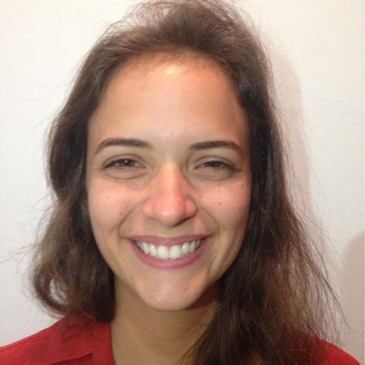

Gabriela Caesar

Jornalista e analista de dados
Twitter:
https://twitter.com/gabrielacaesar
E-mail: gabriela.caesar.2019@gmail.com
Linkedin:
https://www.linkedin.com/in/gabrielacaesar/
GitHub:
https://github.com/gabrielacaesar
Formação
2019 até atual
- Formação em cientista de dados com R no Datacamp
2018 a 2019
- Formação em analista de dados com R no Datacamp
2011 a 2015
- Bacharelado em jornalismo na PUC-Rio
2013
- Intercâmbio acadêmico na Hochschule Osnabrück (Alemanha)
Experiência
2017 até atual
- Jornalista de dados no portal G1, da TV Globo
2016 a 2017
- Repórter no Drive, newsletter do site de notícias Poder360
2015 a 2016
- Trainee, repórter e redatora no jornal O Estado de S.Paulo
2015
- Freelancer no jornal Folha de S.Paulo
2011 a 2015
- Estagiária nos veículos Portal PUC-Rio Digital, Alerj, TV Band, Piauí e Câmara dos Deputados
2008 a 2010
- Estagiária júnior nos veículos Veja Rio, Jornal do Brasil e O Globo
O voto
Eleição em números
As promessas dos políticos
Monitor da Violência
Fato ou Fake
Outros